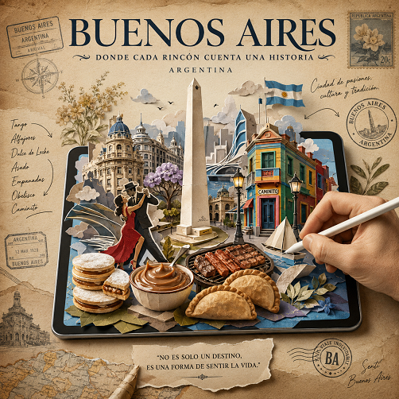

Pósters de Viaje Vintage 3D (Efecto Papercraft)

📖 MANUAL DE USUARIO
Prompt: Creador de Pósters de Viaje Vintage 3D (Efecto Papercraft)
🎯 ¿Para qué sirve?
Este prompt sirve para generar imágenes de pósters turísticos de viaje estilo vintage y de lujo.
El diseño crea una ilusión óptica donde una mano dibuja en una tablet en el centro, y los monumentos, comida típica, naturaleza y cultura del lugar cobran vida saliendo de la pantalla en 3D con capas de papel recortado (papercraft), mapas y sellos postales alrededor.
🛠️ ¿Cómo usarlo paso a paso?
- Copia el bloque del prompt entero (incluyendo las instrucciones y el texto en inglés).
-
Edita ÚNICAMENTE las primeras 3 líneas según tus necesidades:
- • DESTINO: Pon el nombre del lugar en inglés o español (Ej: Roma, Italia / Tokio, Japón).
- • ELEMENTOS DESTACADOS: Escribe 3 a 5 cosas icónicas del lugar separadas por comas (Ej: Coliseo, pizza, vino, fuente de Trevi).
- • RATIO / FORMATO: Elige la proporción (Ej: 3:4 para póster vertical, 9:16 para celular/stories, 16:9 para horizontal).
- Pégalo en el chat de la IA (como ChatGPT / DALL-E) y envíalo.
💡 ¿Por qué funciona esta plantilla?
Es automatizada: La primera línea del texto actúa como una "orden secreta" que obliga a la IA a leer tus datos, colocarlos en el prompt en inglés y generar la imagen inmediatamente, evitando que te responda con solo texto.
No necesitas saber inglés: Solo rellenas los datos del destino al inicio y la plantilla se encarga de todo el estilo artístico complejo en inglés.
INSTRUCCIÓN: Lee las 3 líneas de datos de abajo, sustitúyelas en el prompt en inglés y GENERA LA IMAGEN DIRECTAMENTE sin responder con texto. • DESTINO: (Ciudad, País) • ELEMENTOS DESTACADOS: (Monumentos, comidas) • RATIO / FORMATO: (3:4) Prompt: A premium vintage travel poster featuring [DESTINO] with a large tablet placed in the center displaying a handcrafted 3D papercraft diorama of the destination. The scene seamlessly emerges from the tablet screen into the real world, with colorful paper-cut elements flowing outward. Include iconic landmarks, charming streets, coastal scenery, mountains, flowers, local architecture, traditional culture, regional patterns, native plants, boats, wildlife, signature foods, and [ELEMENTOS DESTACADOS] arranged in an artistic composition. A realistic hand holding a stylus is actively drawing the artwork, creating the illusion that the destination is coming to life. Around the tablet, decorate the poster with vintage passport stamps, postage stamps, travel sketches, handwritten arrows, illustrated local symbols, maps, botanical drawings, and torn paper textures. Typography at the top features "[DESTINO]" in elegant large serif lettering, followed by a refined travel tagline and a smaller subtitle. The poster has warm aged parchment paper, textured paper fibers, soft shadows, layered paper-cut craftsmanship, editorial layout, premium magazine-quality design, subtle depth, cinematic lighting, highly detailed miniature environment, realistic paper textures, elegant composition, luxury tourism campaign aesthetic, handcrafted mixed-media illustration, ultra-realistic, 8K. Vertical [RATIO / FORMATO] aspect ratio poster design.